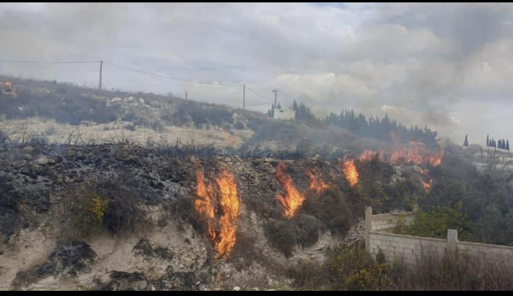

منذ تشرين الأول 2023، ومرورًا بتصعيد آذار 2026، لا يزال جنوب لبنان يشهد دمارًا بيئيًا موثقًا من جهات دولية ومحلية عدة، طال الغابات والأراضي الزراعية والتربة والمياه. وحتى اليوم (أيلول 2026)، ورغم توقيع لبنان وإسرائيل في 26 حزيران 2026 اتفاقًا إطاريًا برعاية أميركية ما زالت الغارات والتفجيرات الإسرائيلية مستمرة في مناطق حدودية جنوبية.

الفسفور الأبيض: توثيق دولي
وثّقت منظمة هيومن رايتس ووتش استخدام الجيش الإسرائيلي ذخائر الفسفور الأبيض في ما لا يقل عن 17 بلدة في جنوب لبنان. وبحسب بيانات جمعها الباحث اللبناني أحمد بيضون مع مجموعة "الجنوبيون الخضر"، تضررت أكثر من 918 هكتارًا في 191 هجومًا موثقًا بالفسفور الأبيض بين تشرين الأول 2023 ووقف إطلاق النار في تشرين الثاني 2024. أما منظمة العفو الدولية فوثّقت أن إسرائيل بدأت استخدام الفسفور الأبيض في لبنان بين 10 و16 تشرين الأول 2023، علمًا أن استخدامه في مناطق مأهولة يخالف البروتوكول الثالث من اتفاقية الأسلحة التقليدية المعينة.
من الناحية العلمية، قدّر المجلس الوطني للبحوث العلمية اللبناني تدمير ما لا يقل عن 2000 هكتار من الغابات وبساتين الزيتون والحمضيات والأراضي الزراعية جزئيًا بفعل الفسفور الأبيض. وضمن الخسائر، أُتلفت غابة "حرج الراهب" التاريخية، وهي غابة بلّوط مساحتها 16 هكتارًا على أطراف عيتا الشعب. كذلك رصد مرصد النزاعات والبيئة (CEOBS) في تقرير تفصيلي استخدام إسرائيل ذخائر الفسفور الأبيض التي أشعلت حرائق واسعة في الأراضي الزراعية، ما أدى إلى موت الغطاء النباتي وتدهور طويل الأمد في التربة والمياه.

الطيور المهاجرة في مرمى الحرب
يقع لبنان على أحد أهم ممرات الهجرة العالمية للطيور، إذ يشكل ثاني أهم طريق هجرة للطيور بين أوروبا والشرق الأوسط وآسيا وأفريقيا، ويُعرف أيضًا بـ"الممر الأفريقي-الأوراسي" أو "ممر شرق البحر المتوسط"، حيث يعبره ملايين الطيور من أكثر من 400 نوع، بين مواقع تكاثرها في أوروبا الوسطى والشرقية ومناطق تشتيتها في وسط أفريقيا وشرقها، ومنها اللقلق الأبيض والعقاب المرقط الصغير والبجع.
دراسة تخصصية صدرت عام 2026 في مجلة Environment and Security خلصت إلى أن الحرب بالمسيّرات تولّد "مخاطر بيئية متعددة الطبقات"، من بينها الإزعاج الصوتي والتلوث الناتج عن الحطام الإلكتروني والإجهاد السلوكي للأحياء البرية، وبخاصة الطيور. وتشير الدراسة إلى أن الطيور قد تفسّر أصوات المسيّرات كوجود مفترس جوي، ما قد يدفعها لهروب مذعور، أو تعطيل تغذيتها، أو التخلي عن مواقع تعشيشها.
الأخطر أن الاتحاد الدولي لحفظ الطبيعة (IUCN) أكد في تقييمه لعام 2025 الانقراض العالمي لطائر الكروان الرفيع المنقار (Numenius tenuirostris)، وهو أحد أول الانقراضات المسجلة رسميًا لنوع من الطيور المهاجرة، وكان هذا الطائر من بين الأنواع التي اعتمدت على ممر جنوب لبنان تحديدًا ضمن مسار هجرتها. ويحذّر الاتحاد من أن الطيور المهاجرة تواجه أصلًا ضغوطًا متراكمة من فقدان الموائل والتوسع العمراني والمبيدات وتغيّر المناخ، إضافة إلى واقع مناطق النزاع المتضررة بتلوث الفسفور الأبيض والمعادن الثقيلة.
وفي تشرين الأول 2025، خلال مؤتمر الاتحاد العالمي لحفظ الطبيعة في أبوظبي، تبنى الأعضاء قرارًا يدعو إلى إعادة تأهيل النظم البيئية اللبنانية المتضررة، مقرًّا بالتدهور البيئي الواسع الذي يشمل تلوث التربة والمياه، وفقدان الغطاء النباتي، والتعرية، وخطر الحرائق، وتهديد الترابط البيئي بين الموائل.